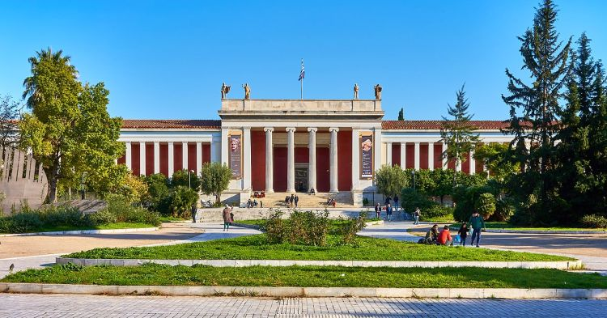
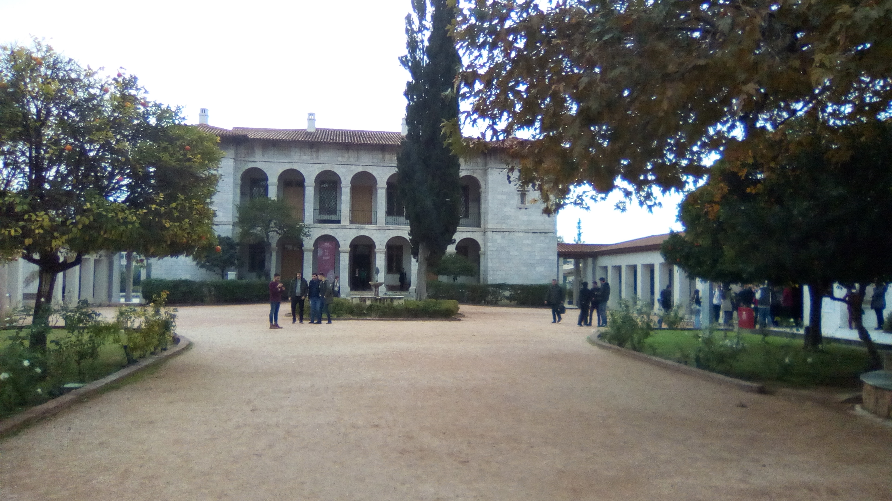
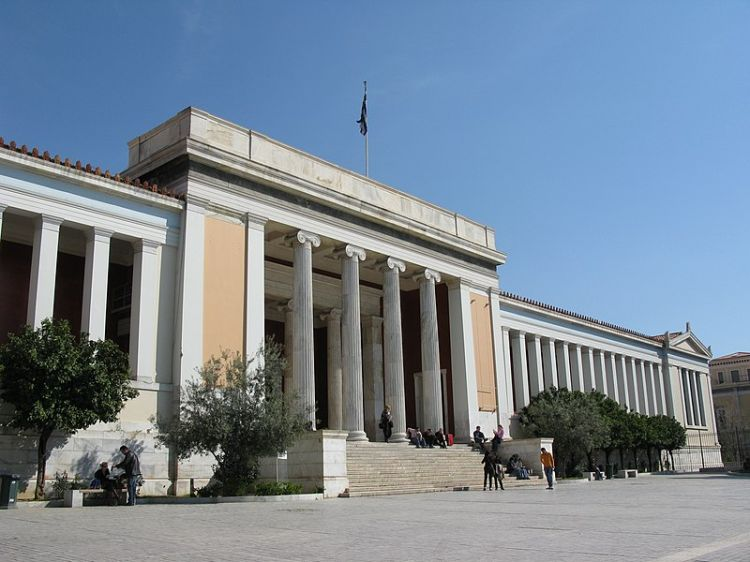
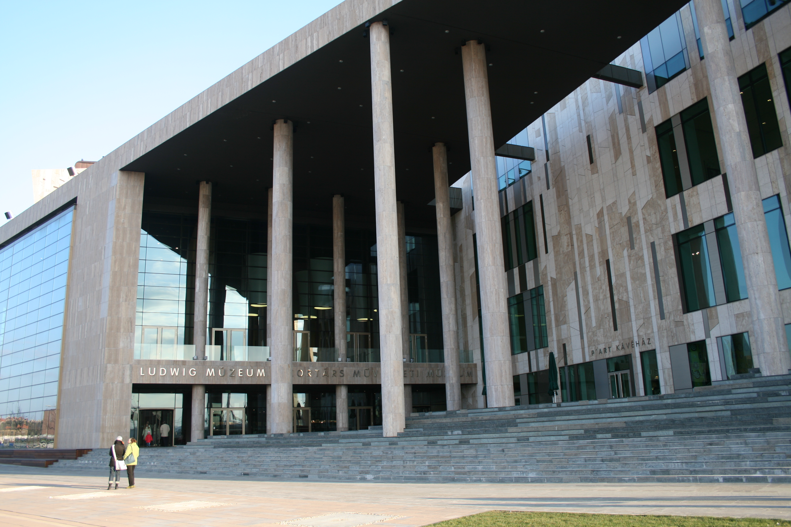

| Athéni Régészeti Múzeum | Az Athéni Régészeti Múzeum Görögország legnagyobb és legjobb régészeti múzeuma, lenyűgöző gyűjteményével, amely több mint 11 000 kiállítást foglal magában. A régiségeknek ez a hatalmas skálája az őskortól a késő ókorig terjed. A kiállított tárgyak hatalmas száma ellenére a gondos és átgondolt elrendezésnek köszönhetően látogatásunk során soha nem érezte magát zsúfoltnak a múzeum. A múzeum egy nagyszerű, citromszínű neoklasszikus kastélyban található, és több helyiségre és melléképületre van felosztva. Szánjon időt arra, hogy megcsodálja az Őskori Régiségek Gyűjteményében található ókori eszközöket és leleteket, majd gyönyörködjön a görög szobrászat korszakokon átívelő fejlődésében a Szoborművek gyűjteményében. |  |
| Bizánci és Keresztény Múzeum | A 2004-ben felújított csodálatos múzeum a bizánci művészet egyik legjobb gyűjteménye a világon. Az Ilissia villájában található ikonok, szobrok és freskók káprázatos skáláját mutatja be a keresztény kultúrából az i.sz. 3. századtól egészen a közelmúltig. A kiállítások szekciókba vannak rendezve és kategorizálva, hogy könnyen megtekinthetők legyenek. |  |
| Országos Régészeti Múzeum | A Nemzeti Régészeti Múzeum egy kincsek múzeuma, amely a görögországi régészeti lelőhelyek leghíresebb leleteit mutatja be. A görög állam által gyűjtött műtárgyak jelentős tárháza is. A múzeumban hatalmas könyvtár, fényképészeti archívum és kémiai laboratóriumok találhatók. |  |
| Nemzeti Kortárs Művészeti Múzeum | A 2000-ben alapított Nemzeti Kortárs Művészeti Múzeum (más néven EMST) Athén egyik legfontosabb kulturális intézménye. Gyűjteményében görög és nemzetközi művészek festményei, installációi, fényképei és szobrai találhatók, mint például Vlassis Caniaris, Nikos Kessanlis, Sirin Nesat és Nan Goldin. |  |